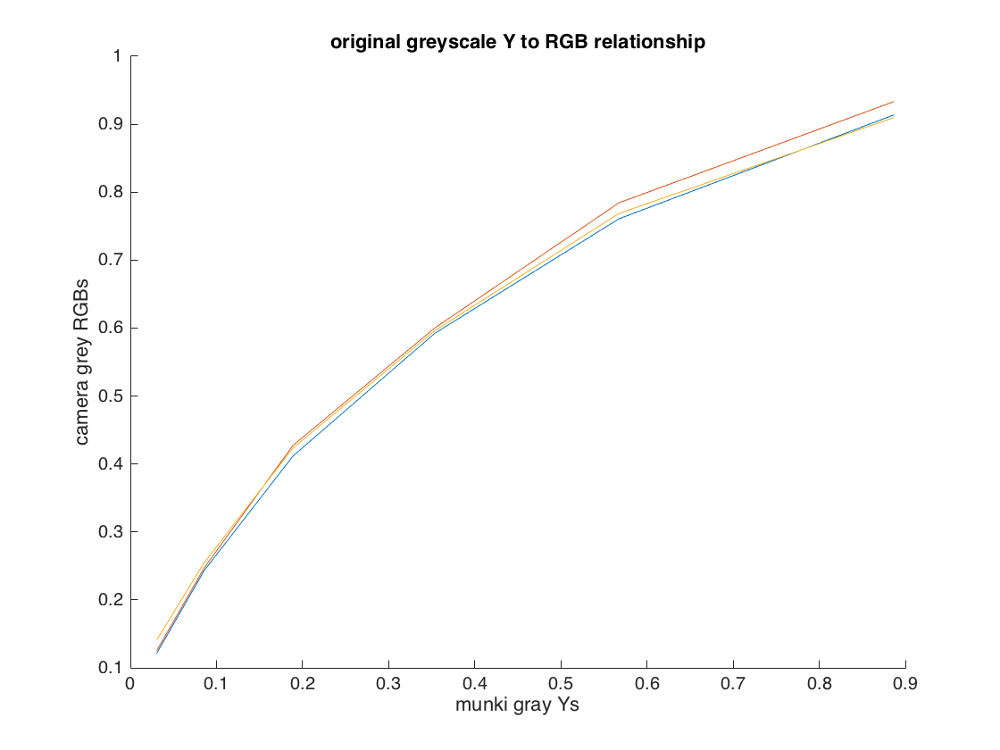

Contents
Calculate normalized RGB values
Using Readings from Jenee's 15" 2010 matte Macbook Pro
%Manual entry of RGB values taken from photoshop cam_RGBs = [101,71,57;216,166,143;98,127,169;82,108,63;148,140,197;... 120,219,199;216,120,44;57,73,160;214,88,100;82,42,95;169,213,74;... 242,184,61;29,33,124;55,140,66;188,42,57;245,229,63;206,75,153;... 31,129,166;233,238,232;194,200,196;151,153,152;105,109,108;... 62,63,65;31,32,36]'; %Normalize RGB values cam_RGBs = cam_RGBs./255; fprintf('cam_RGBs = \n'); disp(cam_RGBs); %Grab final 'row' of RGB values for colorchecer chart %Sort from black to white cam_grey_rgbs = cam_RGBs(:,19:24); cam_grey_rgbs = fliplr(cam_grey_rgbs); fprintf('cam_grey_rgbs = \n'); disp(cam_grey_rgbs);
cam_RGBs =
Columns 1 through 7
0.3961 0.8471 0.3843 0.3216 0.5804 0.4706 0.8471
0.2784 0.6510 0.4980 0.4235 0.5490 0.8588 0.4706
0.2235 0.5608 0.6627 0.2471 0.7725 0.7804 0.1725
Columns 8 through 14
0.2235 0.8392 0.3216 0.6627 0.9490 0.1137 0.2157
0.2863 0.3451 0.1647 0.8353 0.7216 0.1294 0.5490
0.6275 0.3922 0.3725 0.2902 0.2392 0.4863 0.2588
Columns 15 through 21
0.7373 0.9608 0.8078 0.1216 0.9137 0.7608 0.5922
0.1647 0.8980 0.2941 0.5059 0.9333 0.7843 0.6000
0.2235 0.2471 0.6000 0.6510 0.9098 0.7686 0.5961
Columns 22 through 24
0.4118 0.2431 0.1216
0.4275 0.2471 0.1255
0.4235 0.2549 0.1412
cam_grey_rgbs =
0.1216 0.2431 0.4118 0.5922 0.7608 0.9137
0.1255 0.2471 0.4275 0.6000 0.7843 0.9333
0.1412 0.2549 0.4235 0.5961 0.7686 0.9098
Lab Step 4 - Calculate normalized Y values
%Calculate normalized Y values for patches 19-24 munki_values = importdata('munki_CC_XYZs_Labs.txt'); munki_gray_Ys = fliplr(munki_values(19:24,3)'./100); fprintf('munki_gray_Ys = \n'); disp(munki_gray_Ys);
munki_gray_Ys =
0.0307 0.0858 0.1889 0.3534 0.5674 0.8868
Graph RGB Versus Grey Y values
clf; hold on; plot(munki_gray_Ys, cam_grey_rgbs(1,:)); plot(munki_gray_Ys, cam_grey_rgbs(2,:)); plot(munki_gray_Ys, cam_grey_rgbs(3,:)); title('original greyscale Y to RGB relationship'); xlabel('munki gray Ys'); ylabel('camera grey RGBs'); hold off;